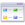

<!--<nav class="navbar navbar-toggleable-md navbar-inverse bg-inverse">
    <button class="navbar-toggler navbar-toggler-right" type="button" data-toggle="collapse" data-target="#navbarNav" aria-controls="navbarNav" aria-expanded="false" aria-label="Toggle navigation">
        <span class="navbar-toggler-icon"></span>
    </button>
    <a class="navbar-brand" href="#">Angular Bar</a>
    <div class="collapse navbar-collapse" id="navbarNav">
        <ul class="navbar-nav">
            <li class="nav-item active"><a class="nav-link" routerLink="home">Home <span class="sr-only">(current)</span></a></li>
            <li class="nav-item"><a class="nav-link" routerLink="/about">about</a></li>
            <li class="nav-item"><a class="nav-link" routerLink="/courses">courses</a></li>
        </ul>
    </div>
</nav>
<router-outlet></router-outlet>-->
<div>
    <md-toolbar color="primary">
        
        <button md-icon-button (click)="sidenav.toggle()">
            <md-icon>view_headline</md-icon>
        </button>
        
        <button routerLink="/" routerLinkActive="active" md-icon-button>
            <md-icon>home</md-icon>
        </button>
        <button md-button routerLink="/about" routerLinkActive="active">Dashboard</button>
        <button md-button routerLink="/about" routerLinkActive="active">Workflows</button>
        <button md-button routerLink="/courses" routerLinkActive="active">Ocr</button>
        
        <span class="example-fill-remaining-space"></span>
        
        <md-icon>search</md-icon>
        <input type="text" placeholder="Search.." style="font-style: italic; font-size: small; width: 300px "/>
        <button md-icon-button [mdMenuTriggerFor]="profileMenu">
            <md-icon>more_vert</md-icon>
        </button>
    </md-toolbar>

    <md-sidenav-container class="example-container">
        
        <md-sidenav mode="side" opened="true" #sidenav class="example-sidenav">
            <md-list style="cursor: pointer;">
                <md-list-item><span style="width: 10px;"></span> OCR Template Design </md-list-item>
                <md-list-item><span style="width: 10px;"></span> Link Templates </md-list-item>
                <md-list-item><span style="width: 10px;"></span> Diretory Monitor </md-list-item>
                <md-list-item><span style="width: 10px;"></span> Workflows </md-list-item>
                <md-list-item><span style="width: 10px;"></span> PDF Template Design </md-list-item>
            </md-list>
        </md-sidenav>

        <div class="example-sidenav-content">

            <div class="content">
                <div class="column">
                    <treeview></treeview>
                </div>
                <div class="column1">
                    <router-outlet></router-outlet>
                </div>
            </div>

        </div>

    </md-sidenav-container>

</div>

<md-menu #profileMenu="mdMenu">
    <button md-menu-item (click)="logout()">
        <md-icon>remove_circle</md-icon>
        <span class="md-display-4">Logout {{username}}</span>
    </button>
</md-menu>


